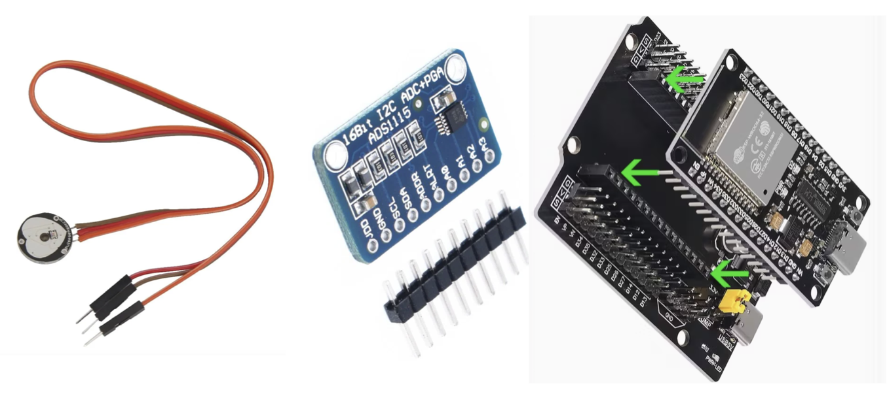

22 de Septiembre, 2025
El fotopletismógrafo es un instrumento y una aplicación web desarrollados exclusivamente con fines educativos y de investigación. Este dispositivo no cuenta con certificación como equipo médico ni cumple con las normativas regulatorias requeridas para su uso clínico.
La información proporcionada por el sistema, incluyendo valores de la frecuencia cardiaca y parámetros derivados de la onda de pulso, es de carácter experimental y puede contener errores o inexactitudes.
Por lo tanto:
El uso de este sistema es bajo la responsabilidad del usuario. Los desarrolladores no se hacen responsables por cualquier daño, perjuicio o consecuencia derivada del uso indebido de la información generada por el dispositivo y su software.
Se recomienda que cualquier medición de la frecuencia cardiaca y forma de pulso con fines clínicos se realice utilizando dispositivos certificados y bajo supervisión médica.

| Componente | Pin | Conexión |
|---|---|---|
| Sensor PPG | +3.3V | 3.3V del ESP32 |
| Sensor PPG | GND | GND común (ESP32 y ADS1115) |
| Sensor PPG | Señal | A0 del ADS1115 |
| ADS1115 | VDD | 3.3V del ESP32 |
| ADS1115 | GND | GND común |
| ADS1115 | SDA | GPIO21 del ESP32 |
| ADS1115 | SCL | GPIO22 del ESP32 |
| ADS1115 | A0 | Señal del sensor PPG |
| ADS1115 | ADDR | GND (dirección I²C 0x48) |
| ESP32 DevKit v1 | GPIO21 (SDA) | SDA del ADS1115 |
| ESP32 DevKit v1 | GPIO22 (SCL) | SCL del ADS1115 |
| ESP32 DevKit v1 | 3.3V | VDD del sensor y ADS1115 |
| ESP32 DevKit v1 | GND | GND común |
#include <Adafruit_ADS1X15.h>
Adafruit_ADS1115 ads;
unsigned long prevMicros = 0;
void setup() {
Serial.begin(115200);
Wire.begin();
Wire.setClock(400000); // más seguro que 800 kHz
if (!ads.begin(0x48)) {
Serial.println("Error: No se encontró el ADS1115 en 0x48");
while (1);
}
ads.setGain(GAIN_TWOTHIRDS); // ±6.144 V
//GAIN_TWOTHIRDS = ±6.144 V → 0.1875 mV por cuenta.
ads.setDataRate(RATE_ADS1115_860SPS); // 860 muestras por segundo
ads.startADCReading(ADS1X15_REG_CONFIG_MUX_SINGLE_0, true); // canal A0
}
void loop() {
// Leer ADS1115
int16_t sensor = ads.getLastConversionResults();
// Convertir a volts
float volts = sensor * 0.1875f / 1000.0f;
// Lanzar siguiente conversión inmediatamente
ads.startADCReading(ADS1X15_REG_CONFIG_MUX_SINGLE_0, true);
// Tiempo en ms
float t_ms = microsNow * 0.001f;
// Buffer de salida
char line[48];
int len = snprintf(
line,
sizeof(line),
"%.4f %d %.2f\n",
volts,
sensor,
t_ms
);
Serial.write((uint8_t*)line, len);
}